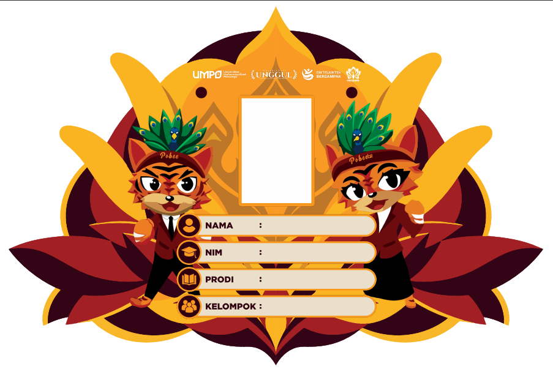
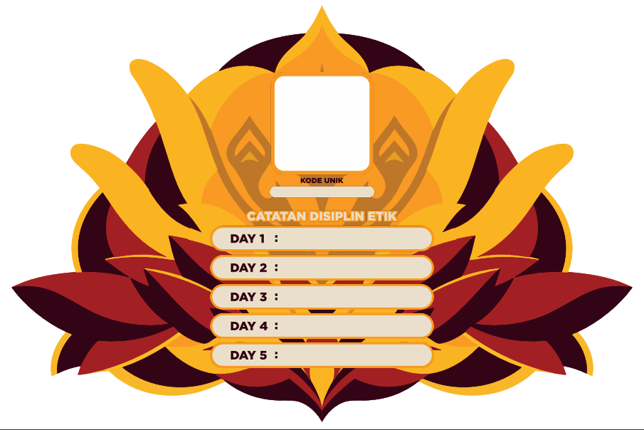

Universitas Muhammadiyah Ponorogo
Update Sistem Presensi
Mastamaru
UMPO 2026
Karsa Humanis, Kampus Harmonis
Keperluan
Mahasiswa
Link QR-Code Peserta
Twibbbon
Frame Perkenalan
Buku Panduan
Mastamaru
BUKU PANDUAN MASTAMARU 2026
ID Card
Mastamaru


Download ID Card
Ikuti
Kami